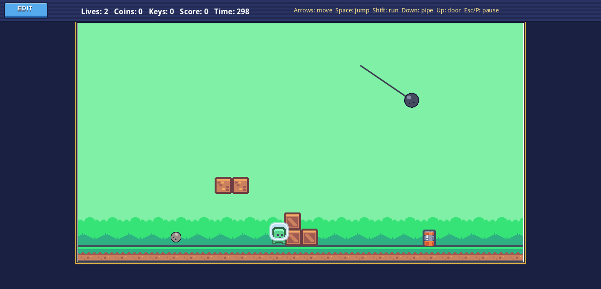
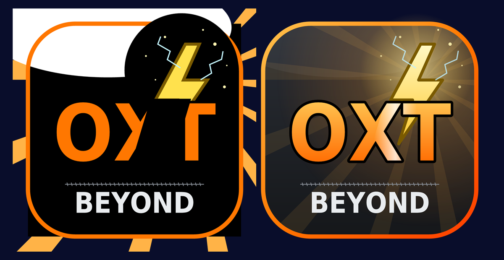
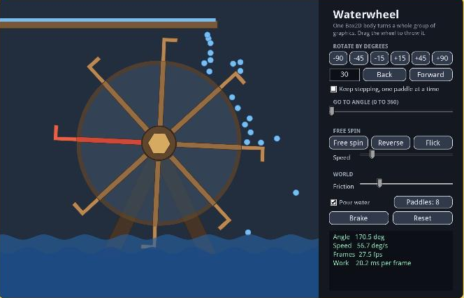

The big ones Each on a page of its own

PlayPixel Platformer Maker
A platformer and level maker with real Box2Dxt physics. Play eight levels, then build your own.

OpenSVG Lab
Every new SVG feature, with its tests: style sheets, clip paths, gradients, export, convert to graphics and live vector drawing. Try your own SVG.

OpenWaterwheel
One Box2D body turns a whole group of graphics. Rotate by degrees, spin it, flick it, throw it by hand or let the water turn it.
Small wonders Each on a page of its own
@PLAYER_SAMPLES_LIST@
Learn by playing Tours and lessons, each on a page of its own
@PLAYER_LESSONS_LIST@